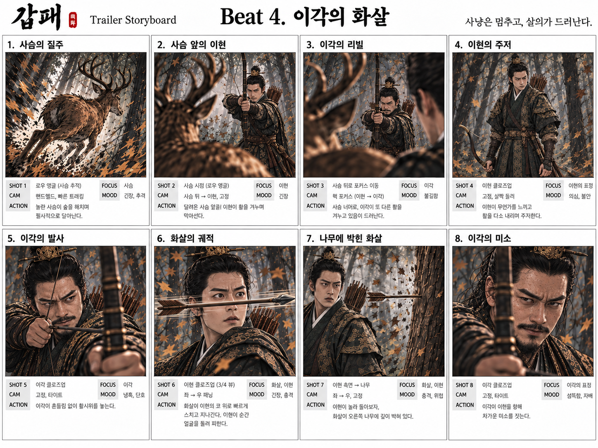
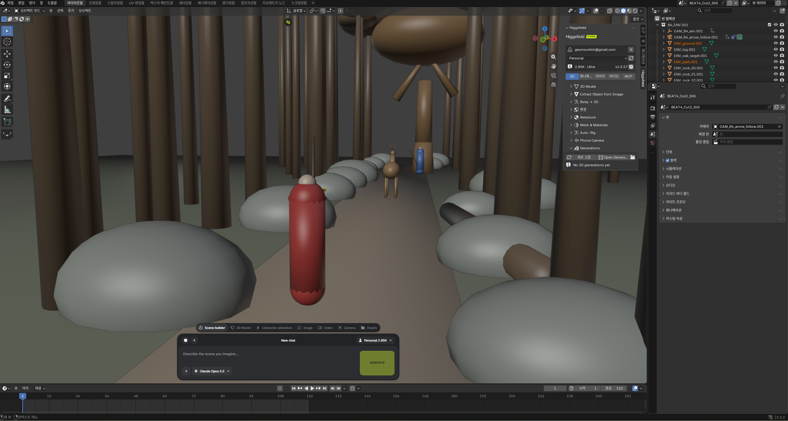
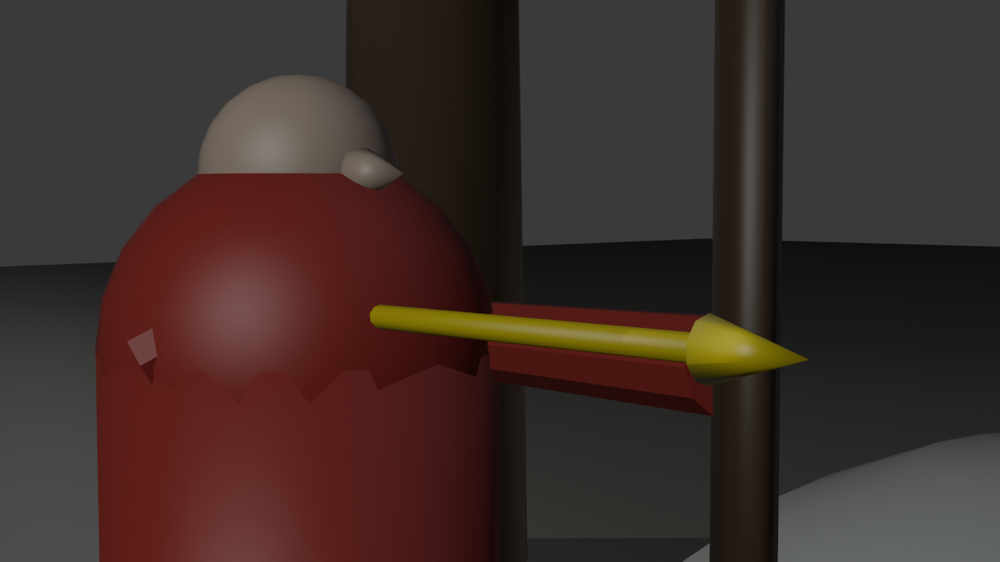
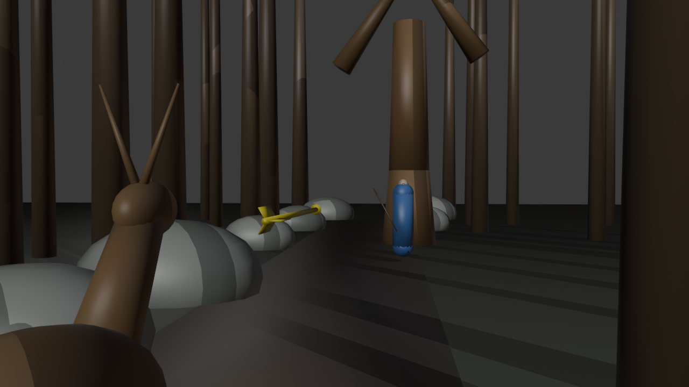
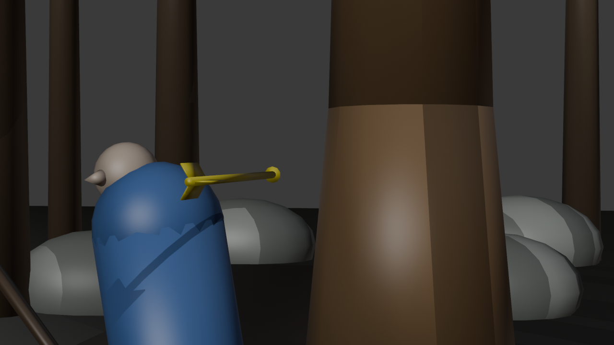
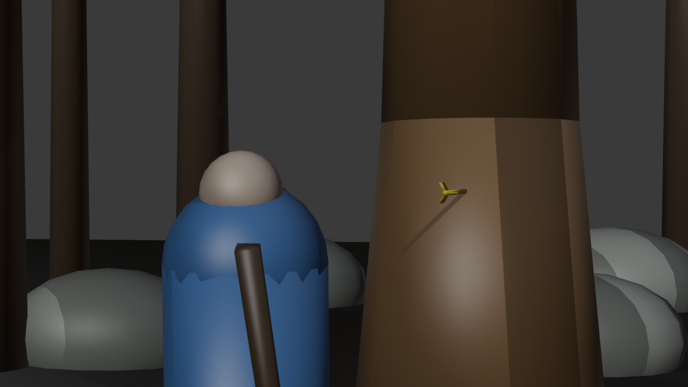

사슴을 빗겨 간 화살
블렌더 프리비즈로 AI 영상에 연출 의도를 전하다
2026년 10월 1일갑패 트레일러 비트4에는 화살 한 발이 있다. 왕인 이각이 쏜 화살이 사슴을 빗겨 날아가, 반대편에 선 왕세제 이현의 얼굴 곁을 스치고 고목에 꽂힌다. 그림 스토리보드로는 5번 발사, 6번 화살의 궤적, 7번 나무에 박힌 화살이다. 원래 세 컷이던 이 부분을, 나는 화살 바로 뒤에서 카메라가 함께 날아가는 하나의 원테이크로 만들고 싶었다.
결과부터 말하면, 블렌더로 만든 3D 프리비즈를 시댄스 2.5에 레퍼런스로 넣은 이 컷은 첫 번째 생성에서 의도한 그대로 나왔다.

말로는 전해지지 않는 장면
문제는 이 장면의 핵심이 말로 잘 전해지지 않는다는 것이었다. 이각은 사슴을 쏜 게 아니다. 사슴은 두 사람 사이에 있을 뿐이고, 화살은 사슴을 일부러 빗겨 이현을 향한다. 그런데 "활을 쏘는 사람, 사슴, 날아가는 화살"이라고만 적어 주면 영상 생성 모델이 사슴을 맞히는 그림으로 읽을 위험이 있다. 엉뚱한 영상이 나오면 장면의 의미가 통째로 달라진다. 이 장면은 문장이 아니라 위치와 방향, 속도로 전해야 했다.
그래서 영상 모델에게 줄 "카메라 움직임의 정답지"를 3D로 먼저 만들기로 했다.
블렌더와 Claude를 연결하다
힉스필드가 제공하는 블렌더 플러그인과 연결 통로(MCP)를 이용해, 블렌더를 Claude와 연결했다. MCP는 AI가 다른 프로그램에 명령을 보낼 수 있게 열어두는 길이다. 실제 대화와 작업 지시는 블렌더 안의 채팅 패널이 아니라 Claude 채팅 창에서 진행했다. Claude가 MCP를 통해 블렌더가 받는 명령을 보내 도형을 만들고, 위치와 회전을 정하고, 카메라를 놓았다. 필요하면 파이썬 코드를 실행해 프레임마다 위치를 찍고, 스크린샷과 렌더 이미지를 보며 결과를 확인했다.
나는 감독으로서 그림 스토리보드와 연출 의도를 Claude와 상의하며 판단했다. 무엇이 보여야 하는지, 화살이 어디를 지나야 하는지, 이현이 어떻게 피해야 하는지는 내가 정했고, Claude가 그것을 3D 장면으로 만들었다.

프리비즈는 이렇게 만들었다
- 공간부터 정했다. 장소 이미지를 기준으로 이각, 사슴, 이현, 고목이 일직선에 놓이게 했다. 사슴을 쏘면 그 선 위의 이현을 쏘는 배치다.
- 모형은 일부러 단순하게 만들었다. 이각은 붉은 캡슐, 이현은 파란 캡슐, 사슴은 갈색 모형, 화살은 노란색이다. 필요한 건 연기가 아니라 카메라와 구도, 화살의 속도였다.
- 화살의 속도와 카메라를 설계했다. 화살은 느리게 날다가 사슴을 스치는 순간 빨라지고, 이현 곁에서 다시 느려진다. 카메라는 화살 바로 뒤에서 함께 날아가다가 고목에서 멈춘다.
- 다섯 번 넘게 고쳤다. 가장 많이 고친 건 이현의 회피다. 최종안에서는 이현이 반 걸음 비껴 몸을 기울여 피하되, 몸 어디에서도 15cm 이상 간격을 두도록 했다. 스토리보드의 이현은 화살이 코를 스치는 순간 얼굴을 돌려 피한다. 닿을 듯 말 듯하면서 닿지 않는 아슬아슬함이 이 장면의 긴장이다.




블렌더 영상을 AI에게 어떻게 줬나
완성한 3D 장면의 렌더 영상을 시댄스 2.5에 영상 레퍼런스로 넣었다. 다만 블렌더 영상은 카메라 워크와 구도, 속도만 참고하라고 못 박았다. 캡슐의 어색한 움직임까지 따라 하면 안 되기 때문이다. 인물의 얼굴과 옷, 숲의 분위기는 이각과 이현의 시트 이미지, 그리고 이각 쪽과 이현 쪽 사냥터 장소 이미지에서 가져오게 했다.
정리하면 이렇다. 움직임은 블렌더가, 모습은 시트와 장소 이미지가 정했다.
결과: 단 한 번의 생성으로
이 컷은 시댄스 2.5에서 단 한 번의 생성으로 의도한 그대로 나왔다. 화살은 사슴을 빗겨 이현 곁을 아슬하게 스치고 고목에 꽂혔고, 카메라는 화살 뒤를 따라 날아갔다. 결과가 완전히 마음에 들어서, 비교하려고 다른 테이크를 더 뽑아 볼 필요도 없었다.
문장으로는 몇 번을 다시 써도 전하기 어려웠던 장면이, 위치와 속도를 3D로 먼저 정해 주니 한 번에 전해졌다.
앞으로
이번 작업은 연출 의도를 AI에게 정확히 전하는 방법으로 3D 프리비즈가 쓸 만하다는 걸 확인한 첫 시도였다. 카메라가 어디서 출발해 어디를 지나고 어디에서 끝나는지, 무엇이 얼마나 빠르게 움직이는지는 문장으로 설명하기 어렵지만 3D에서는 한눈에 보인다.
갑패 영상을 본격적으로 제작하게 되면 블렌더를 더 적극적으로 활용할 계획이다. 특히 카메라가 복잡하게 움직이는 장면과 여러 인물의 동선이 얽히는 장면처럼, 문장으로는 순서와 위치가 뭉개지는 컷에서 쓰려고 한다. 이번 작업에서 만든 방식, 곧 단순한 모형으로 움직임만 정하고 모습은 시트와 장소 이미지에 맡기는 방식이 그 출발점이 될 것이다.